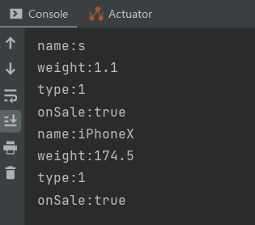
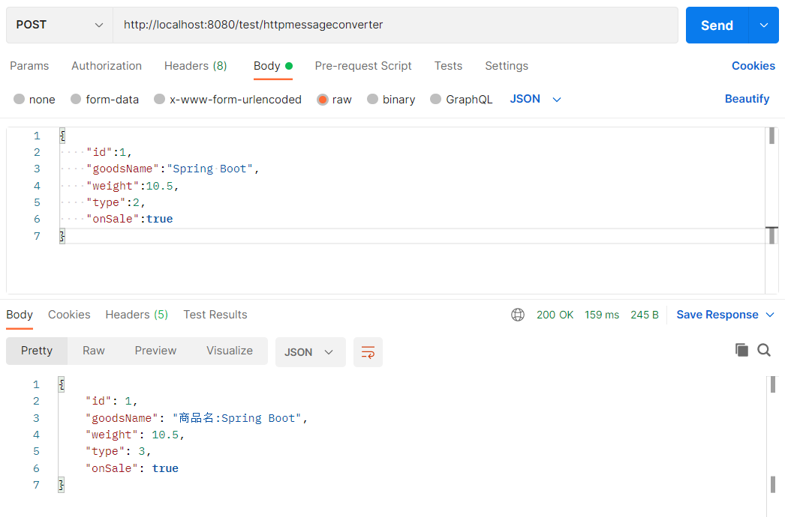
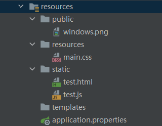
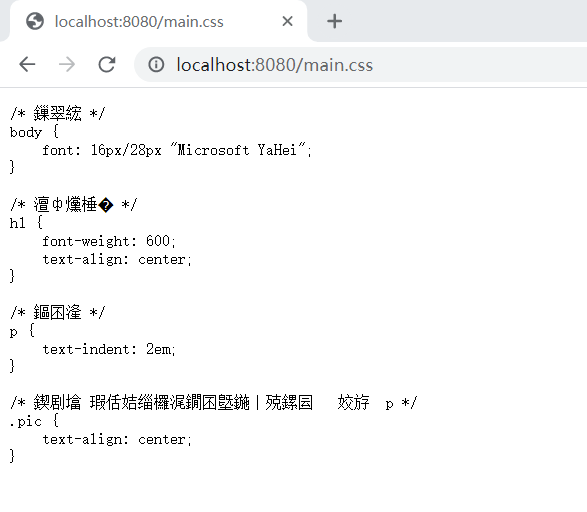
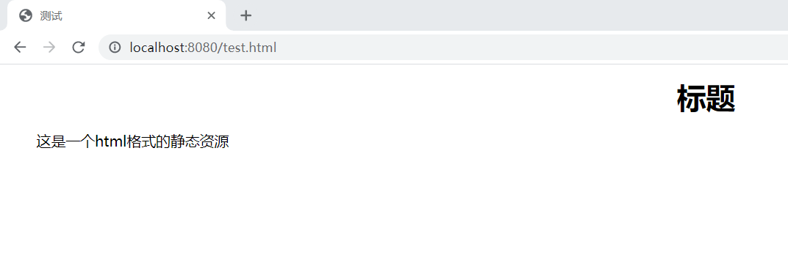
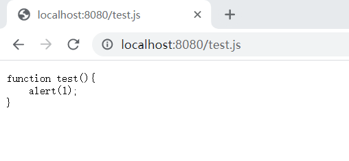
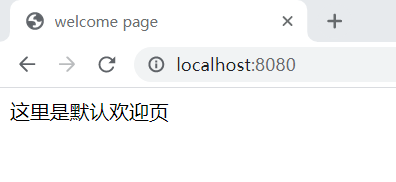
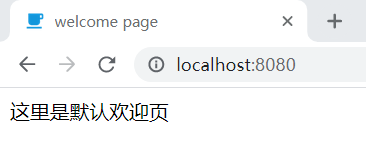
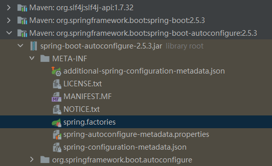

[TOC]
Spring MVC 概述 Spring Web MVC 是一种基于 Java 的轻量级 Web 框架，使用 MVC架构模式的思想将 web 层进行职责解耦，基于请求驱动即使用请求-响应模型，框架的目的就是帮助我们简化开发。
Spring MVC 主要由前端控制器(DispatcherServlet)、处理器映射(HandlerMapping)、控制器(Controller)、视图解析器(ViewResolver)、视图组成。
Spring 的 Web MVC 框架提供了模型 - 视图 - 控制器架构：
模型（Model ） 封装了应用程序的数据和一般他们会组成的 POJO。视图（View） 是负责呈现模型数据和一般它生成的 HTML 输出，客户端的浏览器能够解释。控制器（Controller ） 负责处理用户的请求，并建立适当的模型，并把它传递给视图渲染。
Spring MVC 运行原理
$(1)$ HTTP请求：客户端请求提交到 DispatcherServlet。
Spring MVC 接口
DispatcherServlet 接口：
HandlerMapping 接口：
Controller 接口：
ViewResolver 接口：
自动配置源码分析与实例 除了装载 DispatcherServlet 外，Spring Boot 还做了如下默认配置：
自动配置视图解析器；
静态资源文件处理；
自动注册大量的转换器和格式化器；
提供 HttpMessageConverter 对请求参数和返回结果进行处理；
自动注册 MessageCodeResolver；
默认欢迎页配置；
favicon 自动配置；
可配置的 Web 初始化绑定器。
以上自动配置都是在 WebMvcAutoConfiguration 自动配置类中操作的。
WebMvcAutoConfiguration自动配置类 源码如下：
1 2 3 4 5 6 7 8 9 10 11 12 13 14 15 16 17 18 19 @Configuration( proxyBeanMethods = false ) @ConditionalOnWebApplication( type = Type.SERVLET ) @ConditionalOnClass({Servlet.class, DispatcherServlet.class, WebMvcConfigurer.class}) @ConditionalOnMissingBean({WebMvcConfigurationSupport.class}) @AutoConfigureOrder(-2147483638) @AutoConfigureAfter({DispatcherServletAutoConfiguration.class, TaskExecutionAutoConfiguration.class, ValidationAutoConfiguration.class}) public class WebMvcAutoConfiguration ... }
以上源码可知 WebMvcAutoConfiguration 自动配置类的自动配置触发条件。
ViewResolver视图解析器 Spring MVC 中的 Controller 控制器可以返回各种各样的视图，比如 JSP、JSON、Velocity、FreeMarker、Thymeleaf、HTML 字符流等。这些视图的解析需要各种视图解析器，视图解析器的作用就是将逻辑视图转为物理视图，所有的视图解析器都必须实现 ViewResolver 接口。开发者可以设置一个视图解析器或混用多个视图解析器并指定优先顺序，Spring MVC 会按照视图解析器的优先顺序对逻辑视图进行解析，直到解析成功并返回视图对象，否则抛出异常。
WebMvcAutoConfiguration 的子类 WebMvcAutoConfigurationAdapter 中，在前置条件满足的情况下自动配置类会向 IOC 容器中注册三个视图解析器，分别是 InternalResourceViewResolver、BeanNameViewResolver 和 ContentNegotiatingViewResolver。源码如下：
1 2 3 4 5 6 7 8 9 10 11 12 13 14 15 16 17 18 19 20 21 22 23 24 25 26 27 28 29 30 31 32 33 34 35 36 37 38 39 public static class WebMvcAutoConfigurationAdapter implements WebMvcConfigurer , ServletContextAware ... @Bean @ConditionalOnMissingBean public InternalResourceViewResolver defaultViewResolver () InternalResourceViewResolver resolver = new InternalResourceViewResolver(); resolver.setPrefix(this .mvcProperties.getView().getPrefix()); resolver.setSuffix(this .mvcProperties.getView().getSuffix()); return resolver; } @Bean @ConditionalOnBean({View.class}) @ConditionalOnMissingBean public BeanNameViewResolver beanNameViewResolver () BeanNameViewResolver resolver = new BeanNameViewResolver(); resolver.setOrder(2147483637 ); return resolver; } @Bean @ConditionalOnBean({ViewResolver.class}) @ConditionalOnMissingBean( name = {"viewResolver"}, value = {ContentNegotiatingViewResolver.class} ) public ContentNegotiatingViewResolver viewResolver (BeanFactory beanFactory) ContentNegotiatingViewResolver resolver = new ContentNegotiatingViewResolver(); resolver.setContentNegotiationManager((ContentNegotiationManager)beanFactory.getBean(ContentNegotiationManager.class)); resolver.setOrder(-2147483648 ); return resolver; }
InternalResourceViewResolver：通过设置前缀、后缀和控制器中的方法来返回视图名的字符串，从而得到实际视图内容。
BeanNameViewResolver：在控制器中，一个方法的返回值的字符串会根据 BeanNameViewResolver 查找 Bean 的名称并为返回字符串的 View 渲染视图。
ContentNegotiatingViewResolver：特殊的视图解析器，它不会为自己处理视图，而是委派给其他视图解析器来处理不同的视图，级别最高。
Spring Boot 的自动配置机制会直接在项目启动过程中将视图解析器注册到 IOC 容器中，当然，如果开发者不想使用默认的配置策略，也可以自行添加视图解析器到 IOC 容器中。
在 WebMvcAutoConfigurationAdapter 内部类中含有 addFormatters() 方法，该方法会向 FormatterRegistry 添加 IOC 容器中拥有的 Converter、GenericConverter、Formatter 类型的 Bean。
addFormatters() 方法源码如下：
1 2 3 public void addFormatters (FormatterRegistry registry) ApplicationConversionService.addBeans(registry, this .beanFactory); }
调用了 ApplicationConversionService.addBeans() 方法，源码如下：
1 2 3 4 5 6 7 8 9 10 11 12 13 14 15 16 17 18 19 20 21 22 23 public static void addBeans (FormatterRegistry registry, ListableBeanFactory beanFactory) Set<Object> beans = new LinkedHashSet(); beans.addAll(beanFactory.getBeansOfType(GenericConverter.class).values()); beans.addAll(beanFactory.getBeansOfType(Converter.class).values()); beans.addAll(beanFactory.getBeansOfType(Printer.class).values()); beans.addAll(beanFactory.getBeansOfType(Parser.class).values()); Iterator var3 = beans.iterator(); while (var3.hasNext()) { Object bean = var3.next(); if (bean instanceof GenericConverter) { registry.addConverter((GenericConverter)bean); } else if (bean instanceof Converter) { registry.addConverter((Converter)bean); } else if (bean instanceof Formatter) { registry.addFormatter((Formatter)bean); } else if (bean instanceof Printer) { registry.addPrinter((Printer)bean); } else if (bean instanceof Parser) { registry.addParser((Parser)bean); } } }
简单类型转换的案例：
在 Controller 包中新建 TestController 类：
1 2 3 4 5 6 7 8 9 10 11 @RestController public class TestController @RequestMapping("/test/type/conversion") public void typeConversionTest (String name,float weight,int type,Boolean onSale) System.out.println("name:" +name); System.out.println("weight:" +weight); System.out.println("type:" +type); System.out.println("onSale:" +onSale); } }
启动 Spring Boot 项目，在浏览器中输入 http://localhost:8080/test/type/conversion?name=iPhoneX&weight=174.5&type=1&onSale=true ，查看控制台的打印结果：

HTTP 请求传递的数据都是字符串 String 类型的，而类型转换方法可以将其转换成其他数据类型。
HttpMessageConverter消息转换器 HttpMessageConverter 的设置也是通过 WebMvcAutoConfigurationAdapter 完成的，源码如下：
1 2 3 4 5 public void configureMessageConverters (List<HttpMessageConverter<?>> converters) this .messageConvertersProvider.ifAvailable((customConverters) -> { converters.addAll(customConverters.getConverters()); }); }
使用 Spring MVC 开发 Web 项目时，@RequestBody、@ResponseBody 注解用来进行请求实体的转换和响应结果的格式化输出。以 JSON 数据为例，前者的作用是将请求中的数据解析成 JOSN 并绑定为实体对象，后者的作用是将响应结果以 JSON 格式返回给请求发起者。两者结合起来就是 HttpMessageConverter 的作用。
举个例子，在项目中新建 entity 包并定义一个实体类 SaleGoods，然后通过 @RequestBody、@ResponseBody 注解进行参数的读取和响应，代码如下：
1 2 3 4 5 6 7 8 9 10 11 12 13 14 15 16 17 18 19 20 21 22 23 24 25 26 27 28 29 30 31 32 33 34 35 36 37 38 39 40 41 42 43 44 45 46 public class SaleGoods private Integer id; private String goodsName; private float weight; private int type; private Boolean onSale; public Integer getId () return id; } public void setId (Integer id) this .id = id; } public String getGoodsName () return goodsName; } public void setGoodsName (String goodsName) this .goodsName = goodsName; } public float getWeight () return weight; } public void setWeight (float weight) this .weight = weight; } public Boolean getOnSale () return onSale; } public void setOnSale (Boolean onSale) this .onSale = onSale; } public int getType () return type; } public void setType (int type) this .type = type; } @Override public String toString () return "SaleGoods{" + "id=" + id + ",goodsName='" + goodsName +'\'' + ",weight='" + weight + ",type='" + type + ",onSale='" + onSale + '}' ; } }
在 TestController 类中添加 httpMessageConverterTest() 方法，代码如下：
1 2 3 4 5 6 7 @RequestMapping(value = "/test/httpmessageconverter",method = RequestMethod.POST) public SaleGoods httpMessageConverterTest (@RequestBody SaleGoods saleGoods) System.out.println(saleGoods.toString()); saleGoods.setType(saleGoods.getType() + 1 ); saleGoods.setGoodsName("商品名:" + saleGoods.getGoodsName()); return saleGoods; }
上述代码作用是拿到封装好的 SaleGoods 对象，进行简单的修改后，最后将对象数据返回。
由于这里是 POST 请求，使用 Postman 软件模拟请求：

同时控制台输出：
1 SaleGoods{id=1,goodsName='Spring Boot',weight='10.5,type='2,onSale='true}
消息转换器使得对象数据的读取不仅简单而且正确，响应时也不用自行封装工具类。
静态资源的映射规则 这部分配置依然是 WebMvcAutoConfigurationAdapter 内部类完成的，源码如下：
1 2 3 4 5 6 7 8 9 10 11 12 13 14 15 16 public void addResourceHandlers (ResourceHandlerRegistry registry) if (!this .resourceProperties.isAddMappings()) { logger.debug("Default resource handling disabled" ); } else { this .addResourceHandler(registry, "/webjars/**" , "classpath:/META-INF/resources/webjars/" ); this .addResourceHandler(registry, this .mvcProperties.getStaticPathPattern(), (registration) -> { registration.addResourceLocations(this .resourceProperties.getStaticLocations()); if (this .servletContext != null ) { ServletContextResource resource = new ServletContextResource(this .servletContext, "/" ); registration.addResourceLocations(new Resource[]{resource}); } }); } }
静态资源的映射是在 addResourceHandler() 方法中配置的，StaticPathPattern 的值为 “/**”，表示访问当前项目的任何资源，只要没有匹配的处理映射，则都去静态资源的文件夹找映射。实际的静态资源存放目录通过 getStaticLocations() 方法获取，源码如下：
1 2 3 4 5 6 7 8 9 10 11 12 13 14 15 16 17 18 19 20 21 public static class Resources private static final String[] CLASSPATH_RESOURCE_LOCATIONS = new String[]{"classpath:/META-INF/resources/" , "classpath:/resources/" , "classpath:/static/" , "classpath:/public/" }; private String[] staticLocations; private boolean addMappings; private boolean customized; private final WebProperties.Resources.Chain chain; private final WebProperties.Resources.Cache cache; public Resources () this .staticLocations = CLASSPATH_RESOURCE_LOCATIONS; this .addMappings = true ; this .customized = false ; this .chain = new WebProperties.Resources.Chain(); this .cache = new WebProperties.Resources.Cache(); } public String[] getStaticLocations() { return this .staticLocations; } ... }
由此可知，Spring Boot 默认的静态资源处理目录为：”classpath:/META-INF/resources/“, “classpath:/resources/“, “classpath:/static/“, “classpath:/public/“。开发 Web 项目时只需要包含这几个目录中的一个或者多个，并将静态资源文件放入其中即可。
为验证该配置，在类路径下分别创建 public 目录、resources 目录、static 目录，并分别在三个文件夹中放入静态文件，如图所示：

重启 Spring Boot，打开浏览器分别进行请求：



可见静态资源虽然在不同的目录中，但都能被正确返回，这就是 Spring Boot 对静态资源的拦截处理。
开发者也可以在配置文件 application.properties 中修改拦截地址和静态资源目录。
welcomePage 和 favicon 配置 welcomePage 即默认欢迎页面，配置源码如下：
1 2 3 4 5 6 7 8 9 10 11 12 13 14 15 16 17 18 19 20 21 22 23 24 25 26 27 28 29 30 31 32 33 34 35 @Bean public WelcomePageHandlerMapping welcomePageHandlerMapping (ApplicationContext applicationContext,FormattingConversionService mvcConversionService, ResourceUrlProvider mvcResourceUrlProvider) WelcomePageHandlerMapping welcomePageHandlerMapping = new WelcomePageHandlerMapping(new TemplateAvailabilityProviders(applicationContext), applicationContext, getWelcomePage(),this .mvcProperties.getStaticPathPattern()); welcomePageHandlerMapping.setInterceptors(getInterceptors(mvcConversionService, mvcResourceUrlProvider)); welcomePageHandlerMapping.setCorsConfigurations(getCorsConfigurations()); return welcomePageHandlerMapping; } private Resource getWelcomePage () for (String location : this .resourceProperties.getStaticLocations()) { Resource indexHtml = getIndexHtml(location); if (indexHtml != null ) { return indexHtml; } } ServletContext servletContext = getServletContext(); if (servletContext != null ) { return getIndexHtml(new ServletContextResource(servletContext, SERVLET_LOCATION)); } return null ; } private Resource getIndexHtml (String location) return getIndexHtml(this .resourceLoader.getResource(location)); } private Resource getIndexHtml (Resource location) try { Resource resource = location.createRelative("index.html" ); if (resource.exists() && (resource.getURL() != null )) { return resource; } }catch (Exception ex) {} return null ; }
在进行 Web MVC 自动配置时程序会向 IOC 容器注册一个 WelcomePageHandlerMapping 类型的 Bean，即默认欢迎页面，其路径为静态资源目录下的 index.html 文件。
在 /static/ 目录下添加 index.html 文件：
1 2 3 4 5 6 7 8 9 10 <!DOCTYPE html > <html lang ="en" > <head > <meta charset ="UTF-8" > <title > welcome page</title > </head > <body > 这里是默认欢迎页 </body > </html >
重启项目，再访问 http://localhost:8080/ ，效果如下：

favicon 即网页图标，Spring Boot 2.2 版本之后不提供默认 favicon 图标，开发者可以自定义配置。只要将 favicon 文件放入静态资源目录然后重启项目即可。

SpringBoot 简介 Spring Boot 就是一个 Java web 的开发框架。
Spring Boot 基于 Spring 开发，Spirng Boot 本身并不提供 Spring 框架的核心特性以及扩展功能，只是用于快速、敏捷地开发新一代基于 Spring 框架的应用程序。也就是说，它并不是用来替代 Spring 的解决方案，而是和 Spring 框架紧密结合用于提升 Spring 开发者体验的工具。Spring Boot 以习惯优于配置的核心思想 ，默认帮我们进行了很多设置，多数 Spring Boot 应用只需要很少的 Spring 配置。同时它集成了大量常用的第三方库配置（例如 Redis、MongoDB、Jpa、RabbitMQ、Quartz 等等），Spring Boot 应用中这些第三方库几乎可以零配置的开箱即用。
主要优点：
可以快速创建独立运行的 Spring 项目
拥有大量的自动配置
starter 自动依赖与版本控制
使用嵌入式的 Servlet 容器
约定优于配置 convention over configuration ，意为惯例优先原则。约定优于配置不是说不需要配置，它其实是一种开发原则，目的是在一定限度内减少需要开发人员手动配置的工作量，用默认的配置达到开发人员的需求。
比如在项目中加入 spring-boot-starter-web 后，Spring Boot 会自动导入 Spring MVC 的相关依赖和一个内置的 Tomcat 容器。在导入 spring-boot-starter-web 后，就表示开发人员与 Spring Boot 之间约定当前项目是一个 Web 项目，进一步约定开发人员会使用 Spring MVC，从而自动装配 DispatchServlet 到 IOC 容器中。同理，在项目中加入 jdbc-starter 后就表示开发人员与 Spring Boot 之间约定会对数据库进行操作，Spring Boot 会自动导入 JDBC 相关的依赖并配置一个数据源对象供开发人员调用。
依赖管理 打开 pom.xml 文件，可以看到一个 parent 属性：
1 2 3 4 5 6 <parent > <groupId > org.springframework.boot</groupId > <artifactId > spring-boot-starter-parent</artifactId > <version > 2.5.3</version > <relativePath /> </parent >
该项目依赖父项目：spring-boot-starter-parent，按住 Ctrl 键并点击 spring-boot-starter-parent，进入 spring-boot-starter-parent-2.5.3.pom 文件，部分源码如下：
1 2 3 4 5 6 7 8 9 10 11 12 13 14 15 16 17 18 <modelVersion > 4.0.0</modelVersion > <parent > <groupId > org.springframework.boot</groupId > <artifactId > spring-boot-dependencies</artifactId > <version > 2.5.3</version > </parent > <artifactId > spring-boot-starter-parent</artifactId > <packaging > pom</packaging > <name > spring-boot-starter-parent</name > <description > Parent pom providing dependency and plugin management for applications built with Maven</description > <properties > <java.version > 1.8</java.version > <resource.delimiter > @</resource.delimiter > <maven.compiler.source > ${java.version}</maven.compiler.source > <maven.compiler.target > ${java.version}</maven.compiler.target > <project.build.sourceEncoding > UTF-8</project.build.sourceEncoding > <project.reporting.outputEncoding > UTF-8</project.reporting.outputEncoding > </properties >
该文件仅仅定义了 JDK 所需版本为 1.8、项目的默认编码 UTF-8 和 Maven 项目编译设置，并且它也依赖一个父项目：spring-boot-dependencies。
进入 spring-boot-dependencies-2.5.3.pom 文件中，部分源码如下：
1 2 3 4 5 6 7 8 9 10 11 12 13 14 15 16 17 18 19 20 21 22 23 24 25 26 27 28 29 30 31 32 33 34 35 36 37 38 39 40 41 42 43 44 45 46 <modelVersion > 4.0.0</modelVersion > <groupId > org.springframework.boot</groupId > <artifactId > spring-boot-dependencies</artifactId > <version > 2.5.3</version > <packaging > pom</packaging > <name > spring-boot-dependencies</name > <description > Spring Boot Dependencies</description > <url > https://spring.io/projects/spring-boot</url > <licenses > <license > <name > Apache License, Version 2.0</name > <url > https://www.apache.org/licenses/LICENSE-2.0</url > </license > </licenses > <developers > <developer > <name > Pivotal</name > <email > info@pivotal.io</email > <organization > Pivotal Software, Inc.</organization > <organizationUrl > https://www.spring.io</organizationUrl > </developer > </developers > <scm > <url > https://github.com/spring-projects/spring-boot</url > </scm > <properties > <activemq.version > 5.16.2</activemq.version > <antlr2.version > 2.7.7</antlr2.version > <appengine-sdk.version > 1.9.90</appengine-sdk.version > <artemis.version > 2.17.0</artemis.version > <aspectj.version > 1.9.7</aspectj.version > <assertj.version > 3.19.0</assertj.version > <atomikos.version > 4.0.6</atomikos.version > <awaitility.version > 4.0.3</awaitility.version > <build-helper-maven-plugin.version > 3.2.0</build-helper-maven-plugin.version > <byte-buddy.version > 1.10.22</byte-buddy.version > <caffeine.version > 2.9.2</caffeine.version > <cassandra-driver.version > 4.11.2</cassandra-driver.version > <classmate.version > 1.5.1</classmate.version > <commons-codec.version > 1.15</commons-codec.version > <commons-dbcp2.version > 2.8.0</commons-dbcp2.version > <commons-lang3.version > 3.12.0</commons-lang3.version > <commons-pool.version > 1.6</commons-pool.version > <commons-pool2.version > 2.9.0</commons-pool2.version > ... </properties >
该文件定义了大量依赖信息，如 commons 相关依赖、log 相关依赖、数据库相关依赖、Spring 相关依赖、ElasticSearch 搜索引擎相关依赖、消息队列相关依赖等。这就是 Spring Boot 项目依赖的版本管理中心。版本管理中心默认配置好大部分依赖的版本信息，这些版本信息随着 Spring Boot 版本的更新而更改。这种设计让开发者导入依赖包时不需要写版本号，但如果不是 dependencies 中默认管理的依赖，就需要声明版本号。
结合 Spring Boot 约定优于配置的特性，可以这样理解：Spring Boot 为开发者设置了默认编码、默认 JDK 版本及 Maven 编译的默认设置，同时维护了一套项目依赖的配置，相关依赖可以直接导入，并不需要声明版本号。这就是 Spring Boot 与开发者之间的约定，如果认可这个约定就可以减少一些基本配置和依赖配置；如果不认可也可以自行配置，这些配置会覆盖默认配置。
在 pom.xml 文件中还有一个 spring-boot-starter-web，即在创建项目时选择的 Web 模块。
1 2 3 4 <dependency > <groupId > org.springframework.boot</groupId > <artifactId > spring-boot-starter-web</artifactId > </dependency >
打开 spring-boot-starter-web-2.5.3.pom 文件，可以发现 Spring MVC 所需的依赖和内置的 Tomcat 依赖都已经定义在文件中，这就是为什么仅仅在 pom.xml 文件中加入 spring-boot-starter-web 场景启动器就可以进行 Web 项目的开发。
1 2 3 4 5 6 7 8 9 10 11 12 13 14 15 16 17 18 19 20 21 22 23 24 25 26 27 28 29 30 31 32 <dependencies > <dependency > <groupId > org.springframework.boot</groupId > <artifactId > spring-boot-starter</artifactId > <version > 2.5.3</version > <scope > compile</scope > </dependency > <dependency > <groupId > org.springframework.boot</groupId > <artifactId > spring-boot-starter-json</artifactId > <version > 2.5.3</version > <scope > compile</scope > </dependency > <dependency > <groupId > org.springframework.boot</groupId > <artifactId > spring-boot-starter-tomcat</artifactId > <version > 2.5.3</version > <scope > compile</scope > </dependency > <dependency > <groupId > org.springframework</groupId > <artifactId > spring-web</artifactId > <version > 5.3.9</version > <scope > compile</scope > </dependency > <dependency > <groupId > org.springframework</groupId > <artifactId > spring-webmvc</artifactId > <version > 5.3.9</version > <scope > compile</scope > </dependency > </dependencies >
@SpringBootApplication 注解分析 @SpringBootApplication @SpringBootApplication 标注在一个主程序类上，说明这是一个 Spring Boot 应用。
1 2 3 4 5 6 7 8 @SpringBootApplication public class MallApplication public static void main (String[] args) SpringApplication.run(MallApplication.class, args); } }
按住 Ctrl 并点击 @SpringBootApplication，查看源码：
1 2 3 4 5 6 7 8 9 10 11 12 13 14 15 16 17 18 @Target({ElementType.TYPE}) @Retention(RetentionPolicy.RUNTIME) @Documented @Inherited @SpringBootConfiguration @EnableAutoConfiguration @ComponentScan( excludeFilters = {@Filter( type = FilterType.CUSTOM, classes = {TypeExcludeFilter.class} ), @Filter( type = FilterType.CUSTOM, classes = {AutoConfigurationExcludeFilter.class} )} ) public @interface SpringBootApplication { ... }
可以看出 @SpringBootApplication 注解是一个复合注解，前面四个是 Java 元注解：
@Target({ElementType.TYPE})：类、接口和 enum 声明；
@Retention(RetentionPolicy.RUNTIME)：运行时注解；
@Documented：将注解添加到 Java doc 中；
@Inherited：允许继承。
重要的是后面三个注解：
@SpringBootConfiguration：Spring Boot 配置注解；
@EnableAutoConfiguration：启动自动配置注解；
@ComponentScan：组件自动扫描注解。
Java 元注解并无特殊意义，因此如果主程序中不使用 @SpringBootApplication 注解，也可以替换成后三个注解，效果是一样的。
@SpringBootConfiguration 表示某个类是一个 Spring Boot 的配置类。
查看源码：
1 2 3 4 5 6 7 8 9 10 11 @Target({ElementType.TYPE}) @Retention(RetentionPolicy.RUNTIME) @Documented @Configuration @Indexed public @interface SpringBootConfiguration { @AliasFor( annotation = Configuration.class ) boolean proxyBeanMethods () default true }
@Configuration 注解主要用于定义配置类，替代 XML 配置文件。
@SpringBootConfiguration 注解仅仅是对 @Configuration 注解进行了包装，本质上依然是 @Configuration 注解。
@EnableAutoConfiguration 表示开启自动配置功能。自动配置是“约定大于配置”设计思想的主要体现， 而 @EnableAutoConfiguration 注解是这个功能的入口。
查看源码：
1 2 3 4 5 6 7 8 9 10 11 12 13 @Target({ElementType.TYPE}) @Retention(RetentionPolicy.RUNTIME) @Documented @Inherited @AutoConfigurationPackage @Import({AutoConfigurationImportSelector.class}) public @interface EnableAutoConfiguration { String ENABLED_OVERRIDE_PROPERTY = "spring.boot.enableautoconfiguration" ; Class<?>[] exclude() default {}; String[] excludeName() default {}; }
将 AutoConfigurationImportSelector 这个类注册到 Spring 的 IOC容器中，AutoConfigurationImportSelector 可以帮助 Spring Boot 应用将所有符合条件的 @Configuration 配置都加载到当前 Spring Boot 使用的 IOC 容器中。
AutoConfigurationImportSelector.class 该类是整个自动配置的核心实现，它负责把返回自动配置的相关组件名称注册到 IOC 容器中，源码如下：
1 2 3 4 5 6 7 8 9 10 11 12 13 14 15 16 17 18 19 20 21 22 23 24 25 26 27 28 29 30 31 32 33 34 35 36 37 38 39 40 41 42 43 44 45 46 47 48 49 50 51 52 53 54 55 56 57 58 59 60 61 62 63 64 65 public class AutoConfigurationImportSelector implements DeferredImportSelector , BeanClassLoaderAware , ResourceLoaderAware , BeanFactoryAware , EnvironmentAware , Ordered ... public String[] selectImports(AnnotationMetadata annotationMetadata) { if (!this .isEnabled(annotationMetadata)) { return NO_IMPORTS; } else { AutoConfigurationImportSelector.AutoConfigurationEntry autoConfigurationEntry = this .getAutoConfigurationEntry(annotationMetadata); return StringUtils.toStringArray(autoConfigurationEntry.getConfigurations()); } } ... protected AutoConfigurationImportSelector.AutoConfigurationEntry getAutoConfigurationEntry (AnnotationMetadata annotationMetadata) { if (!this .isEnabled(annotationMetadata)) { return EMPTY_ENTRY; } else { AnnotationAttributes attributes = this .getAttributes(annotationMetadata); List<String> configurations = this .getCandidateConfigurations(annotationMetadata, attributes); configurations = this .removeDuplicates(configurations); Set<String> exclusions = this .getExclusions(annotationMetadata, attributes); this .checkExcludedClasses(configurations, exclusions); configurations.removeAll(exclusions); configurations = this .getConfigurationClassFilter().filter(configurations); this .fireAutoConfigurationImportEvents(configurations, exclusions); return new AutoConfigurationImportSelector.AutoConfigurationEntry(configurations, exclusions); } } public Class<? extends Group> getImportGroup() { return AutoConfigurationImportSelector.AutoConfigurationGroup.class; } protected boolean isEnabled (AnnotationMetadata metadata) return this .getClass() == AutoConfigurationImportSelector.class ? (Boolean)this .getEnvironment().getProperty("spring.boot.enableautoconfiguration" , Boolean.class, true ) : true ; } protected AnnotationAttributes getAttributes (AnnotationMetadata metadata) String name = this .getAnnotationClass().getName(); AnnotationAttributes attributes = AnnotationAttributes.fromMap(metadata.getAnnotationAttributes(name, true )); Assert.notNull(attributes, () -> { return "No auto-configuration attributes found. Is " + metadata.getClassName() + " annotated with " + ClassUtils.getShortName(name) + "?" ; }); return attributes; } protected Class<?> getAnnotationClass() { return EnableAutoConfiguration.class; } protected List<String> getCandidateConfigurations (AnnotationMetadata metadata, AnnotationAttributes attributes) List<String> configurations = SpringFactoriesLoader.loadFactoryNames(this .getSpringFactoriesLoaderFactoryClass(), this .getBeanClassLoader()); Assert.notEmpty(configurations, "No auto configuration classes found in META-INF/spring.factories. If you are using a custom packaging, make sure that file is correct." ); return configurations; } ...
其中 getCandidateConfigurations 方法会调用 SpringFactoriesLoader.loadFactoryNames 获取所有自动配置类的类名。SpringFactoriesLoader 类源码此处省略。
从源码可以看出：Spring Boot 启动时从类路径 META-INF/spring.factories 中获取 EnableAutoConfiguration 指定的配置项，过滤后将这些值作为自动配置类导入容器中。
有哪些自动配置类项？

可以查看 spring.factories 文件：
1 2 3 4 5 6 7 8 9 10 11 12 13 14 # Initializers org.springframework.context.ApplicationContextInitializer=\ org.springframework.boot.autoconfigure.SharedMetadataReaderFactoryContextInitializer,\ org.springframework.boot.autoconfigure.logging.ConditionEvaluationReportLoggingListener ... # Auto Configure org.springframework.boot.autoconfigure.EnableAutoConfiguration=\ org.springframework.boot.autoconfigure.admin.SpringApplicationAdminJmxAutoConfiguration,\ org.springframework.boot.autoconfigure.aop.AopAutoConfiguration,\ org.springframework.boot.autoconfigure.amqp.RabbitAutoConfiguration,\ ... ...
org.springframework.boot.autoconfigure.EnableAutoConfiguration 配置项定义的就是 Spring Boot 默认加载的所有自动配置类。如果 pom.xml 文件没有引入相应的 jar 包和依赖，部分自动配置无法生效。
@ComponentScan 在 Spring IOC 容器中 @Controller、@Service、@Repository、@Component 等注解的默认装配标识是 @ComponentScan 注解。
@ComponentScan 注解的作用就是让 Spring 容器从对应包下获取需要注册的类，开发者通过注解来定义哪些包需要被自动扫描并装配。Spring 将会在被指定的包及其子包中寻找标注了 @ComponentScan 注解的 Bean 并注册到容器中。
SpringApplication 启动流程 Spring Boot 项目通过运行启动类中的 run() 方法来启动应用，查看其源码：
1 2 3 4 5 6 7 8 9 10 11 12 13 14 15 16 17 18 19 20 21 22 23 24 25 26 27 28 29 30 31 32 33 34 35 36 37 38 39 40 41 42 43 44 45 46 47 48 49 50 51 52 53 54 55 56 57 58 59 60 61 62 63 64 65 66 67 68 69 70 public class SpringApplication ... public static ConfigurableApplicationContext run (Class<?> primarySource, String... args) return run(new Class[]{primarySource}, args); } public static ConfigurableApplicationContext run (Class<?>[] primarySources, String[] args) return (new SpringApplication(primarySources)).run(args); } public ConfigurableApplicationContext run (String... args) StopWatch stopWatch = new StopWatch(); stopWatch.start(); DefaultBootstrapContext bootstrapContext = this .createBootstrapContext(); ConfigurableApplicationContext context = null ; this .configureHeadlessProperty(); SpringApplicationRunListeners listeners = this .getRunListeners(args); listeners.starting(bootstrapContext, this .mainApplicationClass); try { ApplicationArguments applicationArguments = new DefaultApplicationArguments(args); ConfigurableEnvironment environment = this .prepareEnvironment(listeners, bootstrapContext, applicationArguments); this .configureIgnoreBeanInfo(environment); Banner printedBanner = this .printBanner(environment); context = this .createApplicationContext(); context.setApplicationStartup(this .applicationStartup); this .prepareContext(bootstrapContext, context, environment, listeners, applicationArguments, printedBanner); this .refreshContext(context); this .afterRefresh(context, applicationArguments); stopWatch.stop(); if (this .logStartupInfo) { (new StartupInfoLogger(this .mainApplicationClass)).logStarted(this .getApplicationLog(), stopWatch); } listeners.started(context); this .callRunners(context, applicationArguments); } catch (Throwable var10) { this .handleRunFailure(context, var10, listeners); throw new IllegalStateException(var10); } try { listeners.running(context); return context; } catch (Throwable var9) { this .handleRunFailure(context, var9, (SpringApplicationRunListeners)null ); throw new IllegalStateException(var9); } }
Spring Boot 项目启动步骤：
$(1)$ 实例化 SpringApplication 对象。
SpringApplication 类的构造方法如下：
1 2 3 4 5 6 7 8 9 10 11 12 13 14 public SpringApplication (ResourceLoader resourceLoader, Class<?>... primarySources) ... this .resourceLoader = resourceLoader; Assert.notNull(primarySources, "PrimarySources must not be null" ); this .primarySources = new LinkedHashSet(Arrays.asList(primarySources)); this .webApplicationType = WebApplicationType.deduceFromClasspath(); this .bootstrapRegistryInitializers = this .getBootstrapRegistryInitializersFromSpringFactories(); this .setInitializers(this .getSpringFactoriesInstances(ApplicationContextInitializer.class)); this .setListeners(this .getSpringFactoriesInstances(ApplicationListener.class)); this .mainApplicationClass = this .deduceMainApplicationClass(); }
webApplicationType 值的设置是为了获取当前应用的类型，对后续构造容器环境和 Spring 容器的初始化起作用。deduceFromClasspath() 方法源码如下：
1 2 3 4 5 6 7 8 9 10 11 12 13 14 15 16 17 18 19 20 21 22 23 24 25 26 27 28 29 30 31 32 33 public enum WebApplicationType NONE, SERVLET, REACTIVE; private static final String[] SERVLET_INDICATOR_CLASSES = new String[]{"javax.servlet.Servlet" , "org.springframework.web.context.ConfigurableWebApplicationContext" }; private static final String WEBMVC_INDICATOR_CLASS = "org.springframework.web.servlet.DispatcherServlet" ; private static final String WEBFLUX_INDICATOR_CLASS = "org.springframework.web.reactive.DispatcherHandler" ; private static final String JERSEY_INDICATOR_CLASS = "org.glassfish.jersey.servlet.ServletContainer" ; ... static WebApplicationType deduceFromClasspath () if (ClassUtils.isPresent("org.springframework.web.reactive.DispatcherHandler" , (ClassLoader)null ) && !ClassUtils.isPresent("org.springframework.web.servlet.DispatcherServlet" , (ClassLoader)null ) && !ClassUtils.isPresent("org.glassfish.jersey.servlet.ServletContainer" , (ClassLoader)null )) { return REACTIVE; } else { String[] var0 = SERVLET_INDICATOR_CLASSES; int var1 = var0.length; for (int var2 = 0 ; var2 < var1; ++var2) { String className = var0[var2]; if (!ClassUtils.isPresent(className, (ClassLoader)null )) { return NONE; } } return SERVLET; } } ... }
webApplicationType 值有 $3$ 个：
SERVLET：Servlet 环境；
REACTIVE：Reactive 环境；
NONE：非 Web 环境。
deduceFromClasspath() 方法多次调用 ClassUtils.isPresent() 方法，先判断 webflux 相关类是否存在，存在则认为当前应用为 REACTIVE 类型；不存在则继续判断 SERVLET 相关类是否存在，若存在则当前应用为 SERVLET 类型；不存在则为 NONE 类型。
$(2)$ 开始执行 run() 方法，代码执行时间的监控开启，Spring Boot 应用启动成功后会打印启动时间。
$(3)$ 配置 headless 属性，java.awt.headless 是 J2SE 的一种模式，用于在缺失显示屏、鼠标或键盘时的系统配置，默认为 true。作用是没有检测到显示器也能继续执行后续步骤。
$(4)$ 获取 SpringApplicationRunListeners；
$(5)$ 回调 SpringApplicationRunListener 对象的 starting() 方法；
$(6)$ 解析 run() 方法的 args 参数并封装为 DefaultApplicationArguments 类；
$(7)$ 为当前应用准备一个 Environment 对象，即运行环境；
$(8)$ 设置系统参数；
$(9)$ 获取需要打印的 Spring Boot Banner 对象。默认打印在控制台上，Spring Boot 目前支持图片 Banner 和文字 Banner。
$(10)$ 创建 Spring 容器 ApplicationContext。根据 webApplicationType 决定创建哪种 contextClass。
$(11)$ 准备 ApplicationContext 实例。至此，主启动类加载完成，容器准备好。
$(12)$ 刷新容器；
1 2 3 4 5 6 7 8 private void refreshContext (ConfigurableApplicationContext context) if (this .registerShutdownHook) { shutdownHook.registerApplicationContext(context); } this .refresh(context); }
首先注册一个 Hook 函数，然后调用 refresh() 方法，经过层层调用，最终执行 AbstractApplicationContext 的 refresh() 方法，源码如下：
1 2 3 4 5 6 7 8 9 10 11 12 13 14 15 16 17 18 19 20 21 22 23 24 25 26 27 28 29 30 31 32 33 34 35 36 37 38 39 40 41 42 43 public void refresh () throws BeansException, IllegalStateException synchronized (this .startupShutdownMonitor) { StartupStep contextRefresh = this .applicationStartup.start("spring.context.refresh" ); this .prepareRefresh(); ConfigurableListableBeanFactory beanFactory = this .obtainFreshBeanFactory(); this .prepareBeanFactory(beanFactory); try { this .postProcessBeanFactory(beanFactory); StartupStep beanPostProcess = this .applicationStartup.start("spring.context.beans.post-process" ); this .invokeBeanFactoryPostProcessors(beanFactory); this .registerBeanPostProcessors(beanFactory); beanPostProcess.end(); this .initMessageSource(); this .initApplicationEventMulticaster(); this .onRefresh(); this .registerListeners(); this .finishBeanFactoryInitialization(beanFactory); this .finishRefresh(); } catch (BeansException var10) { if (this .logger.isWarnEnabled()) { this .logger.warn("Exception encountered during context initialization - cancelling refresh attempt: " + var10); } this .destroyBeans(); this .cancelRefresh(var10); throw var10; } finally { this .resetCommonCaches(); contextRefresh.end(); } } }
该方法是 Spring Bean 加载的核心，用于刷新整个 Spring 上下文信息，定义加载流程。
$(13)$ 调用 afterRefresh() 方法，执行 Spring 容器初始化的后置逻辑，默认实现是一个空的方法；
$(14)$ 代码执行时间的监控停止，知道启动应用花费的时间；
$(15)$ 发布容器启动事件；
$(16)$ 在 ApplicationContext 完成启动后，程序会对 ApplicationRunner 和 CommandLineRunner 进行回调处理，查找当前 ApplicationContext 中是否注册有 CommandLineRunner，如果有则遍历执行它们。
CommandLineRunner 接口的组件会在所有 Spring Beans 初始化之后，SpringApplication.run() 之前执行，一般用于应用程序启动之初的加载数据工作。